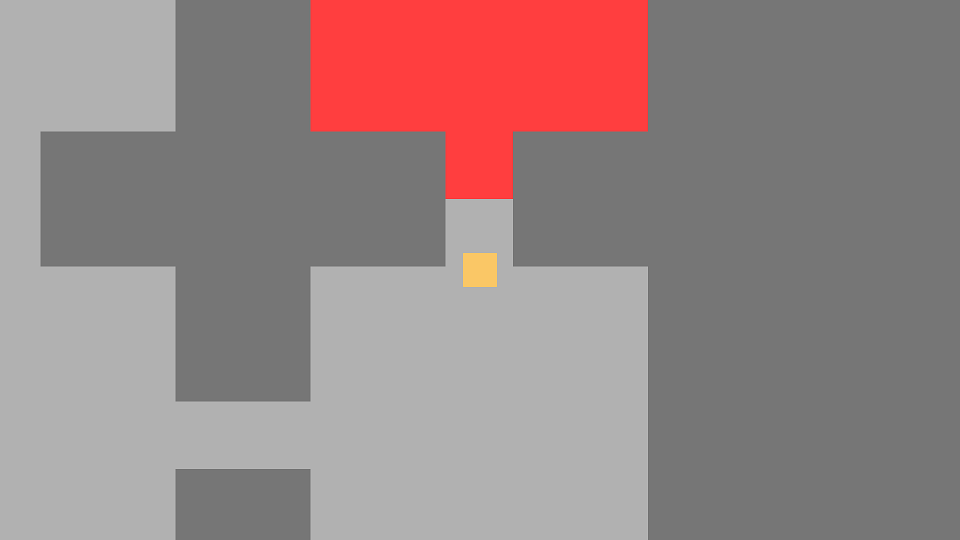

Projects
Unity CI Test Project (2021)
This project is an attempt to use Github actions to setup a Unity Project with Continuous Integration. It uses existing actions to setup the workflow to run Unit Tests and then build for multiple platforms.
Currency tracker (2020 - 2021)

On the right, additional informations about certains currency of the game (owned quantity)
Currency tracker is an Add-On for The Elder Scrolls Online. This Add-On uses the game API to track specials currencies of the games to warn the player when it reaches a user-defined threshold. The Add-On is written in LUA scripting language.
Procedural Generation Initiation (2019)
A grid map procedurally generated
This project was an attempt to create a procedural map. It is a small game with a simple movement where the goal is to reach the red room, leading to the end. It is then possible to play again, increasing the size of the map. Each room is a square with one to four entries, and all of these rooms are linked together. The red room is one of the map's rooms, randomly selected.